Meet Cortex.
The Ultimate Desktop AI.
A deeply integrated OS-level companion featuring hyper-natural voice, advanced system control, and precision understanding.
Hello! I'm Cortex. Waiting for your command...
Everything You Need. Nothing You Don't.
Every feature is purpose-built for Windows and Linux — real OS control, not cloud wrappers.
VOICE INTERACTION
- Local .ONNX Piper models
- Offline human-quality TTS
- Downloadable voice packs
- Adjustable speech rate
- Always-on wake word backup
NATURAL LANGUAGE
- Custom-built NLU engine
- Carrier phrase matching
- Anchor-based context priority
- Over 80+ command variants
- No generic cloud models
SYSTEM DIAGNOSTICS
- Live CPU and RAM usage
- Disk space and temperatures
- Running process monitoring
- Network traffic analysis
- Direct verbal reporting
SECURITY & MAINTENANCE
- Quick Windows Defender scans
- Firewall & open port checks
- DNS cache flushing
- Automated junk file clearing
- Live internet speed tests
APP & DRIVER MANAGER
- Scan for outdated drivers
- Powered by wmic & pnputil
- Live update progress indicators
- Open and close apps by name
- Manage Chrome, Word, WhatsApp
- Kill processes via voice commands
- Full Task Manager integration
FILE SYSTEM OPERATIONS
- Create, move, and copy by voice
- Zip and extract directories
- 8-thread parallel file search
- Interactive search result cards
- Interrupt mid-scan by voice
WORKSPACE MANAGEMENT
- Snap, maximize, & minimize windows
- Create named multi-app Workspaces
- Launch groups with one command
- Switch workspaces instantly
- Visual workspace editor
NEURAL SYNC AUTOMATION
- Visual node-based editor
- Drag-and-drop system commands
- Type Text & Press Hotkey actions
- Play Sound & Notify nodes
- Bezier curve wiring
- Primary startup workflow support
STATUS WIDGET & UI
- Always-visible pill overlay
- Animated state indicators
- Live file-search spinner
- Advanced Z-order locking
- 4 global accent themes live
- Voice-triggered screenshots
- One-click Wi-Fi password reveal
- In-app TTS model downloader
Workflow Evolved
Three simple steps to unlock your autonomous digital brain.
Install & Anchor
Download Cortex and lock its sleek interface to your desktop. Its advanced z-order locking ensures it's always accessible and never lost.

Speak Naturally
Interact using hyper-natural voice. The custom NLU engine effortlessly grasps context and nuanced commands without confusion.
Watch It Execute
Observe as Cortex instantly alters system settings, updates drivers, or manages your devices, communicating its exact state visually.
Inside Cortex
Every panel, every tool — purpose-built for power users who demand complete system control.
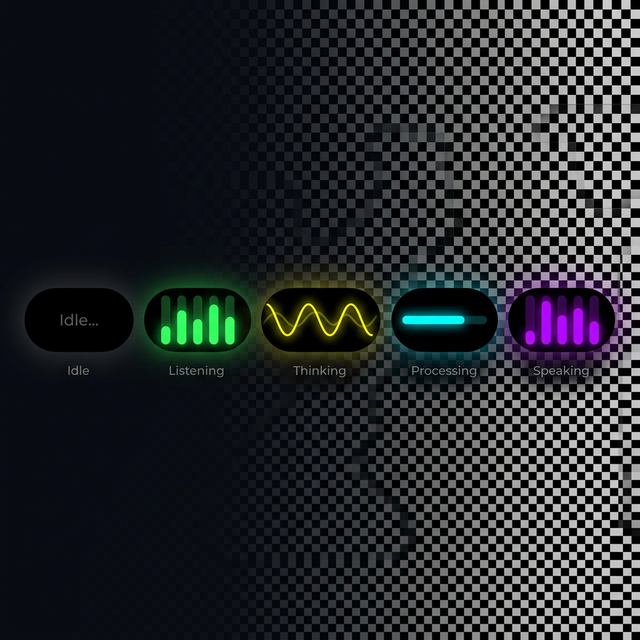
Intelligent Status Widget
The signature face of Cortex — a sleek 140×50px capsule that anchors to your desktop permanently. It visually communicates Cortex's exact internal state in real time through five distinct micro-animations, running at 40 FPS.
- Idle — Static grey text, ambient presence
- Listening — Neon green breathing pulse bars
- Thinking — Dual superimposed yellow sine brain-waves
- Processing — Cyan Gaussian "Knight Rider" sweep
- Speaking — Randomized purple beatbox bars
Win32 HWND_TOPMOST enforcement every 200ms — it never
hides behind your taskbar.
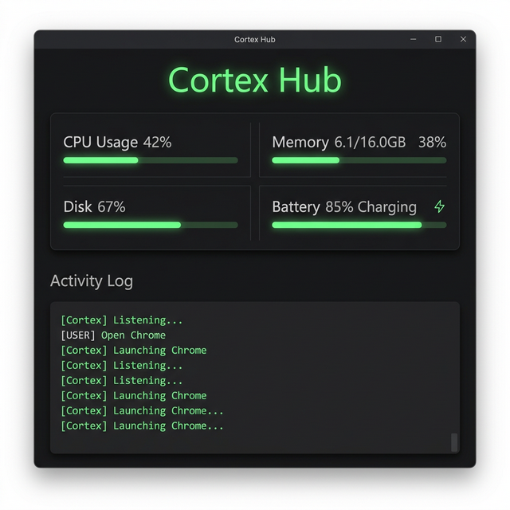
Cortex Hub Dashboard
Your real-time command center. The Hub tracks every critical system metric and logs every interaction Cortex has, giving you complete operational visibility at a glance.
- CPU Usage — Live percentage with animated progress bar
- Memory — Used / Total GB with percent bar, updated every second
- Disk — Storage usage percentage
- Battery — Level + charging state
- Activity Log — Green monospace console shows every command spoken and every response given
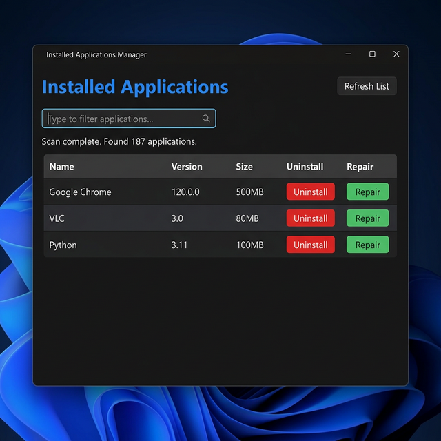
Installed Applications Manager
A full system-level application manager that gives you instant visibility into every installed program. Background-threaded scans ensure the UI never freezes no matter how many apps are installed.
- Live Search — Instantly filter hundreds of apps by name as you type
- Uninstall — One-click removal for any app with an uninstall string
- Repair — In-place repair for MSI-based applications
- Details — App name, version, and installed size all visible in the table
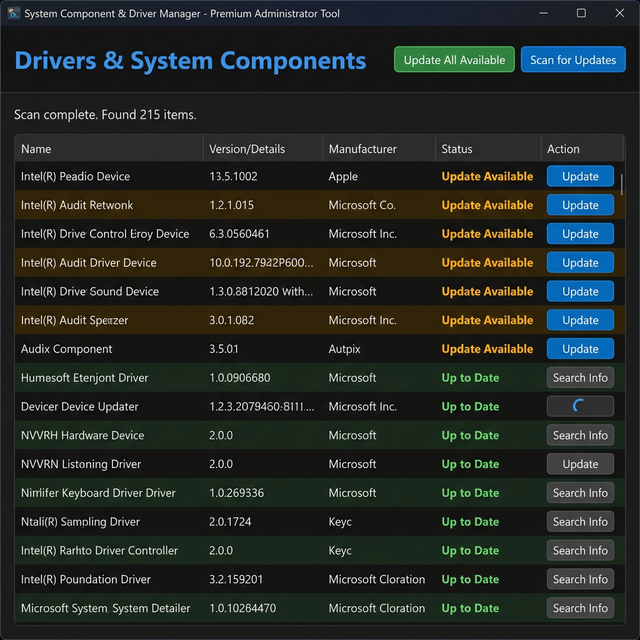
Driver & System Component Manager
Goes beyond standard driver tools by combining WMI hardware driver data with
winget software update checking, all in one unified view. Features the
animated LoadingButton — a custom spinner that replaces the button text
while an update runs.
- Update Available — Highlighted in amber/bold, one-click silent install
- Up to Date — Confirmed green; "Search Info" opens a driver-specific Google query
- Update All — Batch-updates every pending package simultaneously
- Animated Spinner — Custom QPainter arc shows update progress per-row
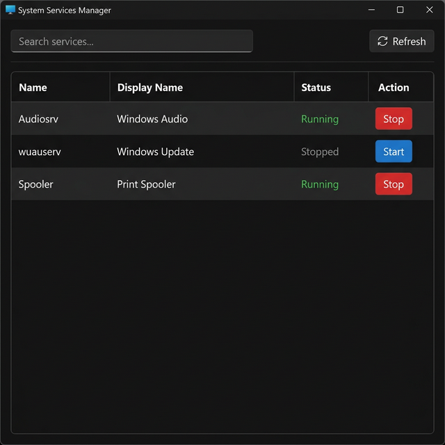
System Services Manager
Full visibility and control over every Windows service, presented in a fast, searchable table. Running services float to the top for immediate attention.
- Running — Bright green status, red "Stop" button to kill instantly
- Stopped — Grey status, blue "Start" button to bring back online
- Live Filter — Search by service name or display name in real time
- Auto-Refresh — Table re-validates 1.5 seconds after any Start/Stop action
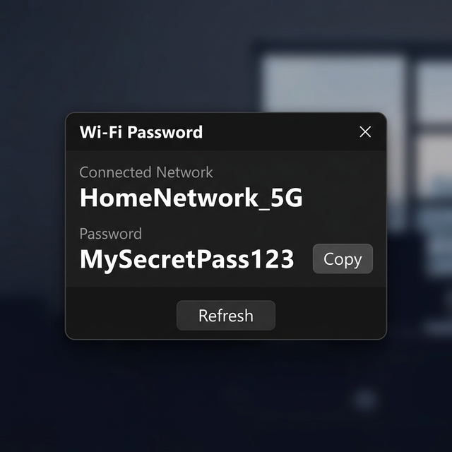
Wi-Fi Password Viewer
A compact, no-nonsense popup that surfaces your current network's saved Wi-Fi password instantly — no digging through system settings required. Triggered by a simple voice command.
- SSID — Current connected network name displayed prominently
- Password — Shown in large bold text, selectable by mouse
- One-Click Copy — "Copy" button next to the password, changes to "Copied" on click
- Voice Triggered — Say "What is my Wi-Fi password?" and this appears instantly
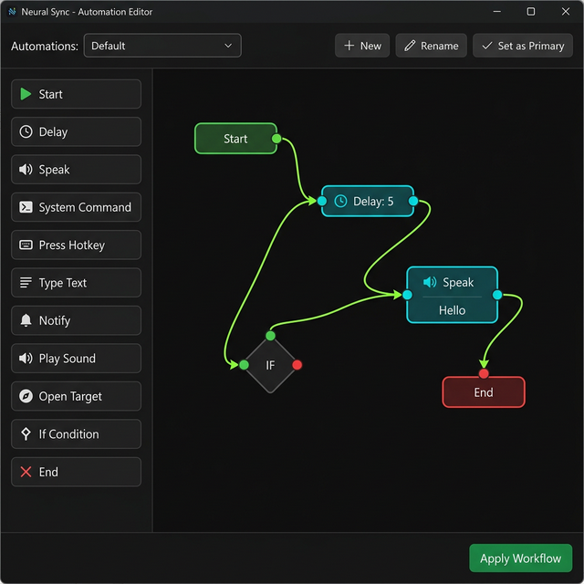
Neural Sync — Visual Automation Editor
The most powerful module in Cortex. A full node-based visual automation builder where you drag-and-drop logic blocks and wire them together with bezier-curve connections — no scripting required.
- 11 Node Types — Start, End, Delay, Speak, System Command, Press Hotkey, Type Text, Notify, Play Sound, Open Target, If Condition
- If Condition Diamond — Branch logic with green True port and red False port for conditional flows
- Multiple Workflows — Create, rename, and switch between named automation profiles with a dropdown
- Set as Primary — One workflow runs on Cortex start; any other can be triggered by voice command
- Live Validation — Canvas checks for disconnected paths in real time before allowing save
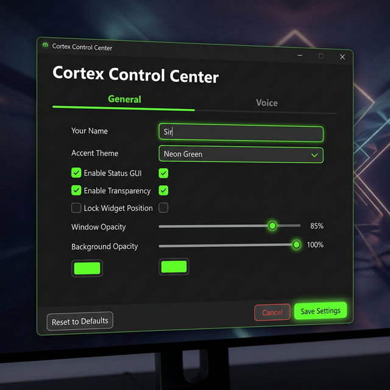
Cortex Control Center
The unified settings hub for every aspect of Cortex, organized into two focused tabs. All changes apply live — no restart required for most settings including theme and widget appearance.
- General Tab — Name, accent theme (Neon Green / Cyber Blue / Plasma Purple / Fiery Red), opacity sliders, background color picker, widget lock toggle
- Voice Tab — Voice pack manager: see all available ONNX voices, download with progress bar, delete, or select
- Speech Rate & Volume — Precise sliders from 50–300 WPM and 0–100% volume
- Live Preview — "Test Current Voice" plays a phrase using current settings via the Piper engine in real time
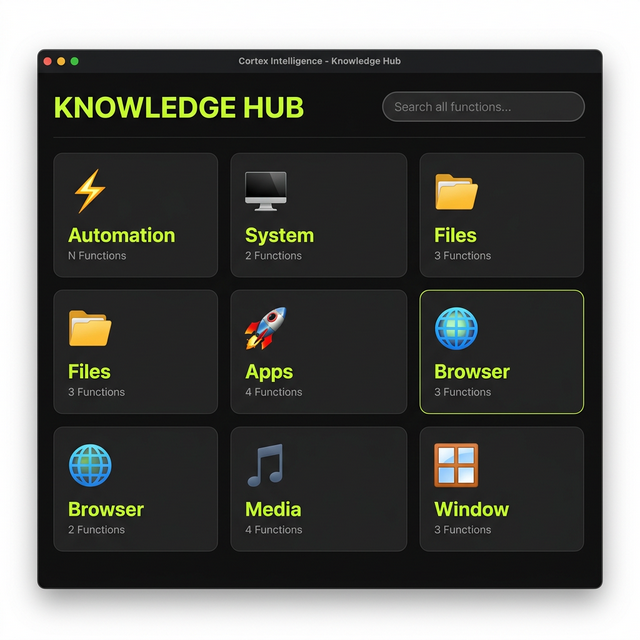
Knowledge Hub
An interactive, searchable map of everything Cortex knows. Browse all voice commands, intents, trigger patterns, and sample responses organized by category — the ultimate reference for power users.
- Bento Grid — Category tiles with emoji icons (⚡ Automation, 🖥️ System, 📁 Files, 🚀 Apps, 🌐 Browser…)
- Drill-Down View — Click any tile to expand all individual intents with collapsible trigger phrase lists
- Global Search — Filters tiles and intent cards across all 9+ categories simultaneously as you type
- Breadcrumb Nav — "KNOWLEDGE HUB > CATEGORY" breadcrumb with back button for frictionless navigation
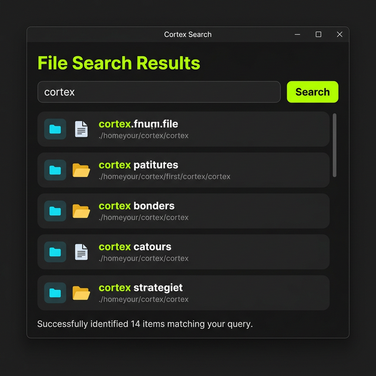
File Search & Results Viewer
Triggered whenever you ask Cortex to find a file or folder. Searches all drives simultaneously with multi-threaded scanning and shows interactive result cards the moment they arrive — no waiting until the full scan is done.
- Exact Match Priority — Exact filename matches appear in neon green at the very top of results
- Open Location — Cyan 📂 button on each card reveals the file in Windows Explorer instantly
- Multi-Drive — Scans all partitions in parallel using up to 8 threads simultaneously
- Live Cancel — Active searches show as spinners on the Status Widget; click any spinner to cancel
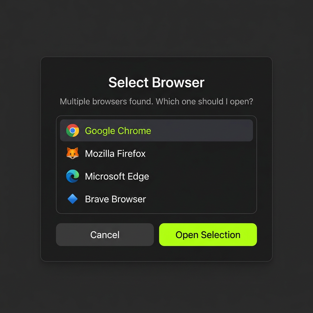
Browser Selection Dialog
A precision micro-popup that appears when you ask Cortex to open a URL and multiple browsers are installed. It auto-detects every browser and lets you choose in one click.
- Auto-Detection — Finds all installed browsers (Chrome, Firefox, Edge, Brave, etc.) automatically
- Context Smart — Only appears when Cortex can't determine which browser to use from context
- Instant Open — Select + "Open Selection" launches the URL in your chosen browser within milliseconds
- Keyboard Support — Arrow keys navigate list; Enter confirms selection without touching the mouse
Ready to evolve your workflow?
Join thousands of professionals already using Cortex to do their best work.